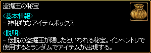

盗掘王の秘宝

一部の秘密ダンジョンクリア時に入手できる。取引/銀行/ギルド倉庫保管が可能。
※2014/6/17アップデートよりジョン・マルコの黄金袋は廃止されました。
| 出現アイテム一覧 | |||
|---|---|---|---|
| アイテム | 効果 | 注意 | |
 |
ライトドラグーンの心臓 | 2分の間、CPがいつも最高に維持される。 |
取引不可 秘密ダンジョン、 ギルドダンジョン、 試練のダンジョンでのみ 使用可。 ログアウトやマップ移動すると効果が消失。 |
| ライトドラグーンの翼 | 10 分の間、秘密ダンジョンでの移動速度 200 ％増加 | ||
| ライトドラグーンの皮 | 10分の間、すべての属性抵抗 50％増加 | ||
 |
力の妙薬 | 力を 250ほど 30分の間、上昇させる。 | ギルド戦での使用不可。 ログアウトすると効果が 消失。 |
 |
敏捷の妙薬 | 敏捷を 250ほど 30分の間、上昇させる。 | |
| 健康の妙薬 | 健康を 250ほど 30分の間、上昇させる。 | ||
| 知識の妙薬 | 知識を 250ほど 30分の間、上昇させる。 | ||
 |
知恵の妙薬 | 知恵を 250ほど 30分の間、上昇させる。 | |
| カリスマの妙薬 | カリスマを 250ほど 30分の間、上昇させる。 | ||
| 運の妙薬 | 運を 250ほど 30分の間、上昇させる。 | ||
| 刻印の書[刊本] | 40％の確率で刻印レベルを1～1増加 | ||
| 刻印の書[写本] | 50％の確率で刻印レベルを1～1増加 | ||
| 刻印の書[原本] | 60％の確率で刻印レベルを1～1増加 | ||
 |
刻印の書DX[刊本] | 40％の確率で刻印レベルを1～3増加 | |
|
刻印の書DX[写本] | 50％の確率で刻印レベルを1～3増加 | |
|
刻印の書DX[原本] | 60％の確率で刻印レベルを1～3増加 | |
| レアコスチュームBOX | レアコスチュームを獲得できる不思議なボックス。各職業別のレアコスチュームの中から、1つをランダムで獲得できる。 | 取引不可 | |
| ユニークコスチュームBOX | ユニークコスチュームを獲得できる不思議なボックス。各職業別のユニークコスチュームの中から、1つをランダムで獲得できる。 | ||
 |
下級クレストBOX | 下級クレストを獲得できる不思議なボックス。下級赤色、青色、金色クレストの中から、1つをランダムで獲得できる。 | |